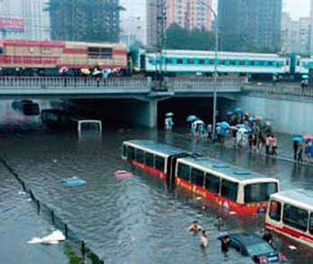

北京管城建的，最该下岗！
2006/7/25 15:19:32

北京的交通是一个已经不能问题的问题，因为永远问题着，所以就无所谓问题，也不能问题了。但交通，全世界都那样，至少还有点借口，反正咱也不是最差的，大伙将就点，能过就过了。然而，北京管城建的，一定是全世界最差的，也是最该下岗的！
且不说如北五环内某著名别墅区往南的亚运村进城主干道已经N久时间不能走这种事情早不能引起哪怕一点儿的不满意，就说说这如昨天的一下雨，整个北京立刻成一大停车场，这难道也能经常在别的地方看到？不和别国比了，就和国内的其他城市，哪有随便下点雨，整个城市交通就基本瘫痪的道理？
前几年，那场雪，把北京城建上的可笑之处暴露给全世界人看，但这几年又有什么改观？还不是天气一不好，上下都紧张，组织这个队那个队又有什么用，如果本来的管道设计就有问题，怎么搞都是废的。（插一句，北京的道路设计也好不到哪里，就说说那些立交桥的设计，别说外地人，就算本地经常走的，有时候也晕，堵车经常就堵在这些非人设计上。）
北京的，当然就要喜欢北京，无论北京多么烂，北京永远是中国最牛的地方，这是毫无疑问的。因此咱必须继续忍受这些变态的道路、管道，必须在各种天气下忍受这些变态道路、管道的变脸，谁叫变脸是遗产呢？虽然不是北京的，但中国的不都是北京的？
虽然李白、杜甫、莎士比亚不是北京的，高斯、爱因斯坦、贝多芬不是北京的，但北京就是文化，北京就是文化之都，连香港都号称自己不是文化沙漠，北京凭什么不是文化之都？有文化，有容乃大，怎么不可以接受一点变态的道路、管道呢？没有这些变态的道路、管道，怎么有机会在雪地、雨天中反刍一下文化的原根性？没有一点霜雪雷电，整天风和日丽的，文化又怎么能有活力、创造力呢？
好吧，沿着这些道路、管道，当然可以继续紊而不刎、坚韧不拔地文化反刍下去，但还是不得不吼一声：北京管城建的，请下岗吧！权当可怜可怜大家确实已经反刍得太累了，你们不下来，大家爽不起来呀！
回复